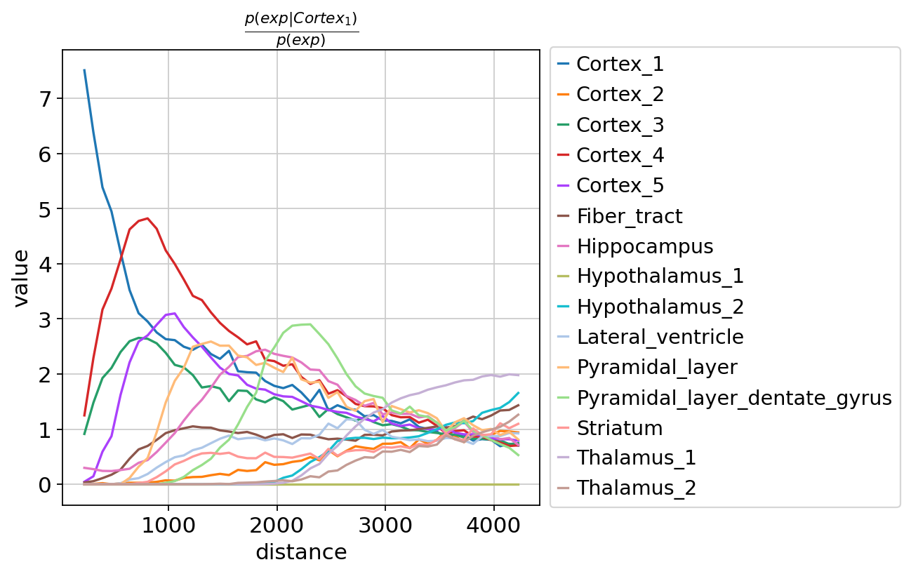

29. 邻域分析#
关键要点
空间统计与邻域分析，可以作为分析空间组学数据很好的第一步起点。
Squidpy 等分析工具提供了多种空间统计量，有助于理解空间组学数据集中的邻域结构。
环境设置
安装 conda:
在创建环境之前，请确保 conda 已安装在您的系统中。
保存 yml 内容:
将 yml 选项卡中的内容复制到名为
environment.yml的文件中。
创建环境:
打开终端或命令提示符。
运行以下命令：
conda env create -f environment.yml
激活环境:
创建好环境后，使用以下命令激活它：
conda activate <environment_name>
替换
<environment_name>，名称就是在environment.yml文件中指定的那个。在 yml 文件里，它看起来像这样：name: <environment_name>
验证安装:
通过运行以下命令，检查环境是否创建成功：
conda env list
name: spatial
channels:
- defaults
- conda-forge
dependencies:
- conda-forge::python=3.12.12
- conda-forge::scanpy=1.12
- conda-forge::leidenalg
- conda-forge::pytorch-cpu
- conda-forge::pip
- pip:
- squidpy==1.8.1
- SpaGCN==1.2.7
- SpatialDE==1.1.3
- tangram-sc==1.0.4
- cell2location==0.1.5
29.1. 动机#
在对数据集中的细胞类型或细胞状态（或根据所用技术，对应的是点/spot）完成注释之后，我们就可以量化这些注释在空间上是否富集，并在整个组织范围内分析细胞邻域。
细胞邻域分析是各种下游任务的良好起点，因为它有助于理解组织的细胞组成，并筛选出值得更深入分析的候选对象。例如，它可以帮助我们基于空间邻近关系寻找细胞间通讯（cell-cell communication）的候选对象，或找出用于识别空间可变基因的空间区域和聚类。
邻域分析通常通过 空间统计 [Gelfand et al., 2010]，它们都是定量分数，可用于识别组织中的空间邻域。下面我们来看看 Squidpy 中实现的各种空间统计量。 [Palla et al., 2022].
29.2. 环境设置和数据#
我们首先载入本教程所需的相应软件包以及数据集。
import scanpy as sc
import squidpy as sq
sc.settings.verbosity = 3
sc.settings.set_figure_params(dpi=80, facecolor="white")
本教程使用的数据集由来自 1 只小鼠的 1 张组织切片组成，由 10x Genomics Space Ranger 1.1.0提供。数据集在 Squidpy 中进行了预处理，并为此数据集提供了加载函数。
adata = sq.datasets.visium_hne_adata()
29.3. 识别空间群落之间的相互作用#
在对数据集中的细胞类型或细胞状态（或根据所用技术，对应的是点/spot）完成注释之后，我们可以量化这些注释在空间上是否富集。为此，计算邻域富集（neighborhood enrichment）可以帮助我们识别在所关注组织中互为邻居的聚类。简而言之，它是衡量聚类之间空间邻近程度的富集分数：如果属于某个聚类的观测（细胞或点）经常靠近属于另一个聚类的观测，它们就会获得较高的分数，表现为富集；反之，如果它们相距甚远、很少互为邻居，分数就会较低，可定义为贫化（depleted）。该分数基于置换检验（permutation-based test），你可以用 n_perms 参数设置置换次数（默认为 1000）。
由于这个函数作用于空间连接矩阵（空间图），我们也需要先把它计算出来；具体方法是使用 squidpy.gr.spatial_neighbors().
sq.gr.spatial_neighbors(adata)
Creating graph using `grid` coordinates and `None` transform and `1` libraries.
Adding `adata.obsp['spatial_connectivities']`
`adata.obsp['spatial_distances']`
`adata.uns['spatial_neighbors']`
Finish (0:00:01)
现在，我们可以通过提供注释键（annotation key）来运行邻域富集检验，键位于 adata.obs.
sq.gr.nhood_enrichment(adata, cluster_key="cluster")
Calculating neighborhood enrichment using `1` core(s)
Adding `adata.uns['cluster_nhood_enrichment']`
Finish (0:00:00)
该方法将 adata.uns['cluster_nhood_enrichment'] 添加到了我们的 AnnData 对象中。
adata.uns["cluster_nhood_enrichment"]
{'zscore': array([[ 70.22155762, -13.6041789 , -0.4258425 , 2.94739732,
-9.03708733, -12.44368289, -8.94699794, -12.42056733,
-9.76328672, -8.53570662, -5.34106034, -6.81758862,
-10.46793569, -13.79518632, -11.85984283],
[-13.6041789 , 74.34650092, -6.37460975, -9.11260235,
1.92787693, -12.0461501 , -11.90907953, -11.42070949,
-8.79949063, -7.03693412, -5.27623436, -6.33541649,
-3.39758871, -13.09498141, -11.02100047],
[ -0.4258425 , -6.37460975, 71.02312621, -10.2557408 ,
-8.38252823, -3.56904737, -11.60339076, -11.17301353,
-8.63097371, -8.04109503, -4.88912876, -6.29768401,
-7.40871581, -12.6590886 , -10.5828295 ],
[ 2.94739732, -9.11260235, -10.2557408 , 57.83928709,
14.41213846, -9.54187862, -9.20031921, -9.36357782,
-7.19965825, -6.49172687, -4.07412227, -5.14772134,
-7.55767703, -10.34784232, -8.81768536],
[ -9.03708733, 1.92787693, -8.38252823, 14.41213846,
36.34406673, -8.27754053, -7.55077944, -8.38725173,
-6.28914454, -1.78180094, -3.50081508, -4.46780626,
-6.80187795, -9.09205304, -7.97723212],
[-12.44368289, -12.0461501 , -3.56904737, -9.54187862,
-8.27754053, 56.46317761, -1.65912586, -9.83917564,
3.34500357, 4.76287001, -4.4421212 , -6.07070432,
-4.06673556, -9.01905311, -7.63068773],
[ -8.94699794, -11.90907953, -11.60339076, -9.20031921,
-7.55077944, -1.65912586, 56.52983503, -10.53203586,
-6.95861812, -2.59374816, 26.16381548, 13.58097471,
-8.86853162, -11.81470655, -10.82483187],
[-12.42056733, -11.42070949, -11.17301353, -9.36357782,
-8.38725173, -9.83917564, -10.53203586, 78.38442071,
-3.86826297, -4.37445824, -4.5991668 , -5.83739543,
-8.6848676 , -11.53420802, -6.35636122],
[ -9.76328672, -8.79949063, -8.63097371, -7.19965825,
-6.28914454, 3.34500357, -6.95861812, -3.86826297,
61.62040415, -4.40694372, -3.54475788, -2.20267766,
-6.88126696, -1.30472155, -2.3125057 ],
[ -8.53570662, -7.03693412, -8.04109503, -6.49172687,
-1.78180094, 4.76287001, -2.59374816, -4.37445824,
-4.40694372, 42.4700539 , -3.1814847 , -4.0503999 ,
4.9198482 , -8.01018986, -4.18579912],
[ -5.34106034, -5.27623436, -4.88912876, -4.07412227,
-3.50081508, -4.4421212 , 26.16381548, -4.5991668 ,
-3.54475788, -3.1814847 , 45.15843296, -1.28213058,
-3.87010332, -4.99305736, -4.42082271],
[ -6.81758862, -6.33541649, -6.29768401, -5.14772134,
-4.46780626, -6.07070432, 13.58097471, -5.83739543,
-2.20267766, -4.0503999 , -1.28213058, 64.52229328,
-4.87520289, -5.13157661, -5.494849 ],
[-10.46793569, -3.39758871, -7.40871581, -7.55767703,
-6.80187795, -4.06673556, -8.86853162, -8.6848676 ,
-6.88126696, 4.9198482 , -3.87010332, -4.87520289,
72.72449982, -10.10115791, -8.53496568],
[-13.79518632, -13.09498141, -12.6590886 , -10.34784232,
-9.09205304, -9.01905311, -11.81470655, -11.53420802,
-1.30472155, -8.01018986, -4.99305736, -5.13157661,
-10.10115791, 80.27730927, -3.61634144],
[-11.85984283, -11.02100047, -10.5828295 , -8.81768536,
-7.97723212, -7.63068773, -10.82483187, -6.35636122,
-2.3125057 , -4.18579912, -4.42082271, -5.494849 ,
-8.53496568, -3.61634144, 67.62254826]]),
'count': array([[1352, 1, 145, 128, 4, 4, 40, 0, 0, 0, 0,
0, 0, 0, 0],
[ 1, 1290, 67, 9, 87, 0, 0, 0, 0, 7, 0,
0, 55, 0, 0],
[ 145, 67, 1140, 0, 2, 83, 3, 0, 0, 0, 0,
0, 18, 0, 0],
[ 128, 9, 0, 678, 140, 0, 0, 0, 0, 0, 0,
0, 0, 0, 0],
[ 4, 87, 2, 140, 330, 0, 6, 0, 0, 20, 0,
0, 0, 0, 0],
[ 4, 0, 83, 0, 0, 878, 92, 7, 90, 84, 1,
0, 43, 35, 24],
[ 40, 0, 3, 0, 6, 92, 872, 0, 13, 34, 128,
104, 0, 3, 0],
[ 0, 0, 0, 0, 0, 7, 0, 1080, 31, 19, 0,
0, 0, 0, 29],
[ 0, 0, 0, 0, 0, 90, 13, 31, 544, 7, 0,
10, 0, 64, 39],
[ 0, 7, 0, 0, 20, 84, 34, 19, 7, 314, 0,
0, 63, 1, 17],
[ 0, 0, 0, 0, 0, 1, 128, 0, 0, 0, 120,
3, 0, 0, 0],
[ 0, 0, 0, 0, 0, 0, 104, 0, 10, 0, 3,
280, 0, 9, 0],
[ 0, 55, 18, 0, 0, 43, 0, 0, 0, 63, 0,
0, 736, 0, 0],
[ 0, 0, 0, 0, 0, 35, 3, 0, 64, 1, 0,
9, 0, 1382, 72],
[ 0, 0, 0, 0, 0, 24, 0, 29, 39, 17, 0,
0, 0, 72, 902]], dtype=uint32)}
添加的对象包含两个数组。第一个存储在 zscore 下，包含每对细胞-细胞相互作用的富集 z 分数。第二个则存储在 count 下，代表富集计数。
最后，我们将直接对结果进行可视化，使用 squidpy.pl.nhood_enrichment().
sq.pl.nhood_enrichment(adata, cluster_key="cluster", method="average", figsize=(5, 5))
{kind=link}
从上图中可以看到， Pyramidal_layer 和 Dentate_gyrus这两个聚类之间似乎存在富集。通过查看上面的空间散点图，我们可以确认这些聚类确实是“邻居”，因为其成员往往很接近。
处理这种问题的类似方法就是计算我们称之为 相互作用矩阵，也就是组织中各聚类之间所有相邻观测连接的总和。这种方法与邻域富集分析相关，但它不是一项检验，而应被看作是对空间图（spatial graph）的一个简单汇总统计量。下面我们来看看该数据集的相互作用矩阵是什么样子。
sq.gr.interaction_matrix(adata, cluster_key="cluster")
Adding `adata.uns['cluster_interactions']`
该函数将 adata.uns['cluster_interactions'] 添加到我们的 AnnData 对象中，它记录了在给定空间连接图下，两个聚类之间相互作用的次数。
adata.uns["cluster_interactions"]
array([[1.352e+03, 1.000e+00, 1.450e+02, 1.280e+02, 4.000e+00, 4.000e+00,
4.000e+01, 0.000e+00, 0.000e+00, 0.000e+00, 0.000e+00, 0.000e+00,
0.000e+00, 0.000e+00, 0.000e+00],
[1.000e+00, 1.290e+03, 6.700e+01, 9.000e+00, 8.700e+01, 0.000e+00,
0.000e+00, 0.000e+00, 0.000e+00, 7.000e+00, 0.000e+00, 0.000e+00,
5.500e+01, 0.000e+00, 0.000e+00],
[1.450e+02, 6.700e+01, 1.140e+03, 0.000e+00, 2.000e+00, 8.300e+01,
3.000e+00, 0.000e+00, 0.000e+00, 0.000e+00, 0.000e+00, 0.000e+00,
1.800e+01, 0.000e+00, 0.000e+00],
[1.280e+02, 9.000e+00, 0.000e+00, 6.780e+02, 1.400e+02, 0.000e+00,
0.000e+00, 0.000e+00, 0.000e+00, 0.000e+00, 0.000e+00, 0.000e+00,
0.000e+00, 0.000e+00, 0.000e+00],
[4.000e+00, 8.700e+01, 2.000e+00, 1.400e+02, 3.300e+02, 0.000e+00,
6.000e+00, 0.000e+00, 0.000e+00, 2.000e+01, 0.000e+00, 0.000e+00,
0.000e+00, 0.000e+00, 0.000e+00],
[4.000e+00, 0.000e+00, 8.300e+01, 0.000e+00, 0.000e+00, 8.780e+02,
9.200e+01, 7.000e+00, 9.000e+01, 8.400e+01, 1.000e+00, 0.000e+00,
4.300e+01, 3.500e+01, 2.400e+01],
[4.000e+01, 0.000e+00, 3.000e+00, 0.000e+00, 6.000e+00, 9.200e+01,
8.720e+02, 0.000e+00, 1.300e+01, 3.400e+01, 1.280e+02, 1.040e+02,
0.000e+00, 3.000e+00, 0.000e+00],
[0.000e+00, 0.000e+00, 0.000e+00, 0.000e+00, 0.000e+00, 7.000e+00,
0.000e+00, 1.080e+03, 3.100e+01, 1.900e+01, 0.000e+00, 0.000e+00,
0.000e+00, 0.000e+00, 2.900e+01],
[0.000e+00, 0.000e+00, 0.000e+00, 0.000e+00, 0.000e+00, 9.000e+01,
1.300e+01, 3.100e+01, 5.440e+02, 7.000e+00, 0.000e+00, 1.000e+01,
0.000e+00, 6.400e+01, 3.900e+01],
[0.000e+00, 7.000e+00, 0.000e+00, 0.000e+00, 2.000e+01, 8.400e+01,
3.400e+01, 1.900e+01, 7.000e+00, 3.140e+02, 0.000e+00, 0.000e+00,
6.300e+01, 1.000e+00, 1.700e+01],
[0.000e+00, 0.000e+00, 0.000e+00, 0.000e+00, 0.000e+00, 1.000e+00,
1.280e+02, 0.000e+00, 0.000e+00, 0.000e+00, 1.200e+02, 3.000e+00,
0.000e+00, 0.000e+00, 0.000e+00],
[0.000e+00, 0.000e+00, 0.000e+00, 0.000e+00, 0.000e+00, 0.000e+00,
1.040e+02, 0.000e+00, 1.000e+01, 0.000e+00, 3.000e+00, 2.800e+02,
0.000e+00, 9.000e+00, 0.000e+00],
[0.000e+00, 5.500e+01, 1.800e+01, 0.000e+00, 0.000e+00, 4.300e+01,
0.000e+00, 0.000e+00, 0.000e+00, 6.300e+01, 0.000e+00, 0.000e+00,
7.360e+02, 0.000e+00, 0.000e+00],
[0.000e+00, 0.000e+00, 0.000e+00, 0.000e+00, 0.000e+00, 3.500e+01,
3.000e+00, 0.000e+00, 6.400e+01, 1.000e+00, 0.000e+00, 9.000e+00,
0.000e+00, 1.382e+03, 7.200e+01],
[0.000e+00, 0.000e+00, 0.000e+00, 0.000e+00, 0.000e+00, 2.400e+01,
0.000e+00, 2.900e+01, 3.900e+01, 1.700e+01, 0.000e+00, 0.000e+00,
0.000e+00, 7.200e+01, 9.020e+02]])
我们可以用以下方法可视化结果： squidpy.pl.interaction_matrix().
sq.pl.interaction_matrix(adata, cluster_key="cluster", method="average", figsize=(5, 5))
{kind=link}
对于该数据集，我们大致重现了邻域富集检验的结果，不过似乎并没有观察到以下聚类之间存在特别强的相互作用： Pyramidal_layer 和 Dentate_gyrus 聚类。出现这种结果的一种解释是：这些聚类的观测数量较少，因此相互作用的次数也较少。
29.4. 跨空间维度的共现#
另一种可以基于空间坐标中的细胞类型注释来计算的空间统计量，就是我们所说的共现分数（co-occurrence score） [Palla et al., 2022, Tosti et al., 2021]。共现分数能告诉我们：随着组织中距离的增大，各聚类之间是否仍会彼此共现。共现分数定义为：
\(\frac{p(exp|cond)}{p(exp)}\)
其中 \(p(exp|cond)\) 表示观测到聚类 \(exp\) 、其条件是存在聚类 \(cond\) 不过 \(exp\) 则表示观测到 \(exp\) 在所关注半径范围内的概率。该分数是在组织中每个观测（此处即各个点/spot）周围、半径不断增大的范围内计算的。
sq.gr.co_occurrence(adata, cluster_key="cluster")
sq.pl.co_occurrence(adata, cluster_key="cluster", clusters="Cortex_1", figsize=(8, 5))
Calculating co-occurrence probabilities for `50` intervals `1` split combinations using `1` core(s)
Adding `adata.uns['cluster_co_occurrence']`
Finish (0:00:00)
{kind=link}

在这里，我们选择了可视化聚类 Cortex_1 以直观展示在近距离下，该聚类如何与其他 Cortex 聚类共现，正如预期。
29.5. 参考文献#
A.E. Gelfand, M. Fuentes, P. Guttorp, and P. Diggle. Handbook of Spatial Statistics. Chapman & Hall/CRC Handbooks of Modern Statistical Methods. Taylor & Francis, 2010. ISBN 9781420072877. URL: http://books.google.com/books?id=EFbbcMFZ2mMC.
Giovanni Palla, Hannah Spitzer, Michal Klein, David Fischer, Anna Christina Schaar, Louis Benedikt Kuemmerle, Sergei Rybakov, Ignacio L. Ibarra, Olle Holmberg, Isaac Virshup, Mohammad Lotfollahi, Sabrina Richter, and Fabian J. Theis. Squidpy: a scalable framework for spatial omics analysis. Nature Methods, 19(2):171–178, Feb 2022. URL: https://doi.org/10.1038/s41592-021-01358-2, doi:10.1038/s41592-021-01358-2.
Luca Tosti, Yan Hang, Olivia Debnath, Sebastian Tiesmeyer, Timo Trefzer, Katja Steiger, Foo Wei Ten, Sören Lukassen, Simone Ballke, Anja A. Kühl, Simone Spieckermann, Rita Bottino, Naveed Ishaque, Wilko Weichert, Seung K. Kim, Roland Eils, and Christian Conrad. Single-nucleus and in situ rna–sequencing reveal cell topographies in the human pancreas. Gastroenterology, 160(4):1330–1344.e11, 2021. URL: https://www.sciencedirect.com/science/article/pii/S0016508520353993, doi:https://doi.org/10.1053/j.gastro.2020.11.010.
29.6. 贡献者#
29.6.2. 审阅者#
Anna Schaar
Lukas Heumos